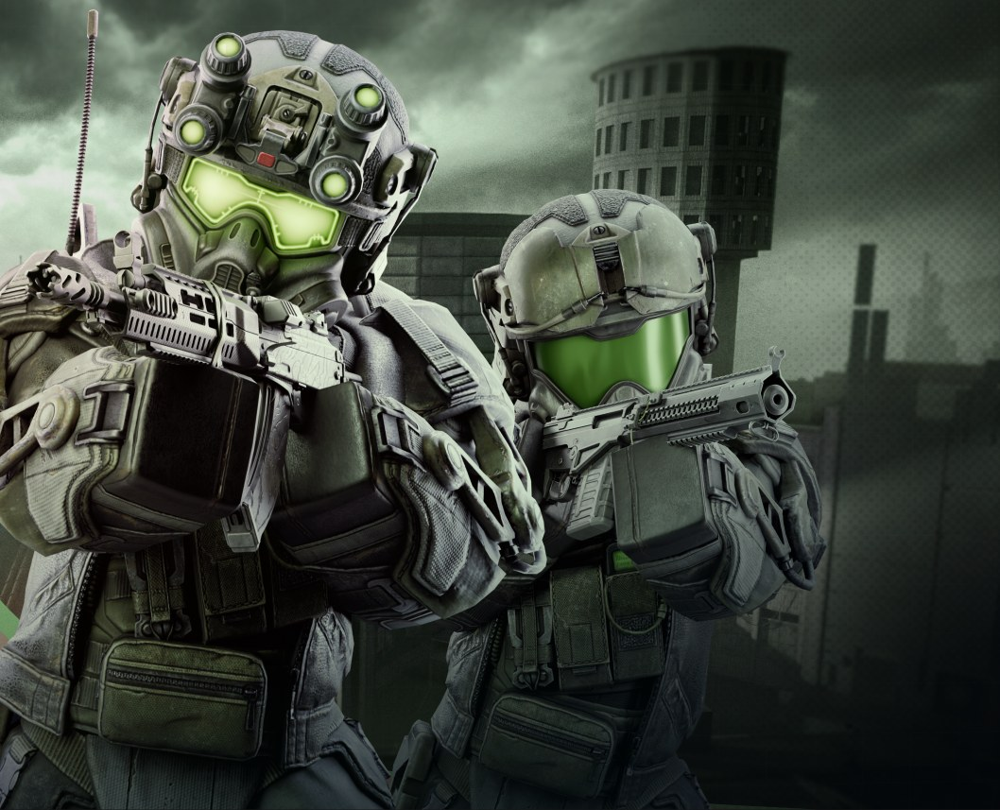

PRJ_01 // EXBO // Senior UI/UX
Stalzone
MMOFPS in a living open world, formerly STALCRAFT: X. I design its interfaces: from the logic of a game mechanic to the screen the player sees in the game.

About // the game
MMOFPS in the Chernobyl Exclusion Zone
Players fight mutants and each other, hunt for artifacts, trade on an open market and wage faction wars. A huge open world, a dozen session modes, crafting and barter: each system has its own interface, and together they have to feel like one game.
Studio
EXBOGenre
MMOFPSPlatform
PC, SteamRole
Senior UI/UXMy part // what I do
From the mechanic to the screen
- 01Break down the mechanic first: mind maps and user flows show how a player moves through a scenario and where they get lost
- 02Check ideas on prototypes, then follow the handoff so the screen works in the game as designed
- 03Maintain the studio design system: new components, consistent interfaces across projects
- 04Consult game designers on the UX of mechanics while they are still an idea
- 05Onboard new designers into the studio's process